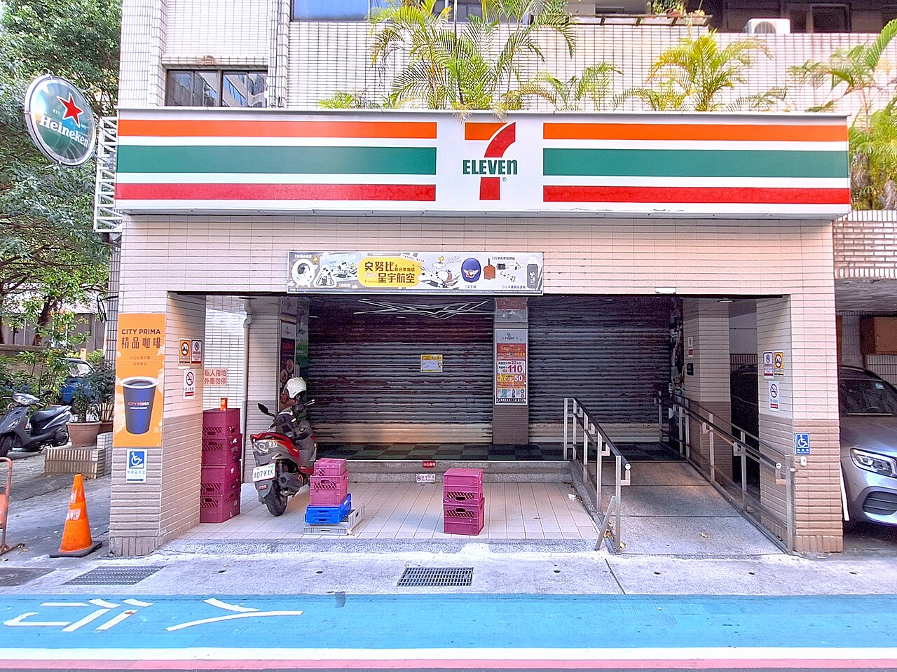
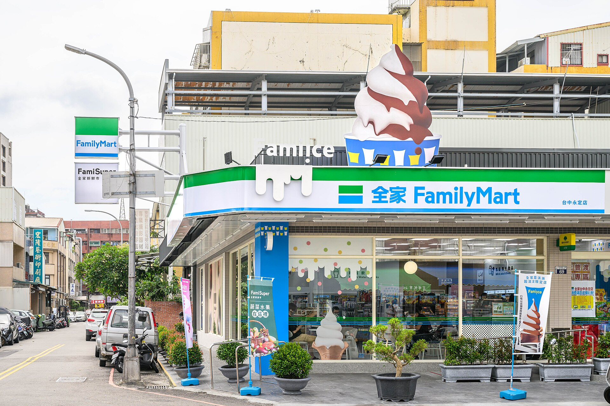
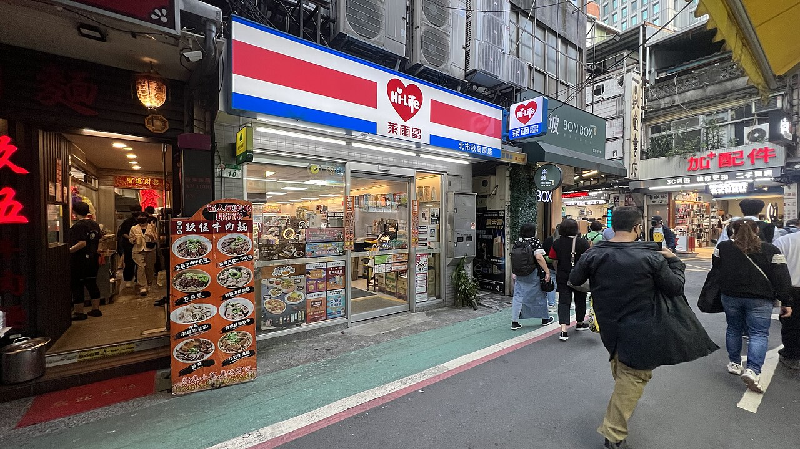
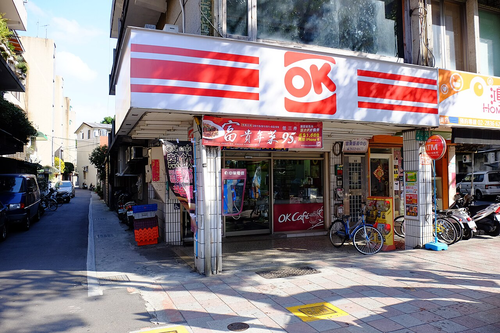
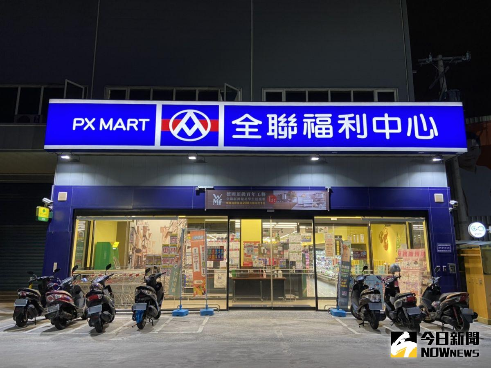
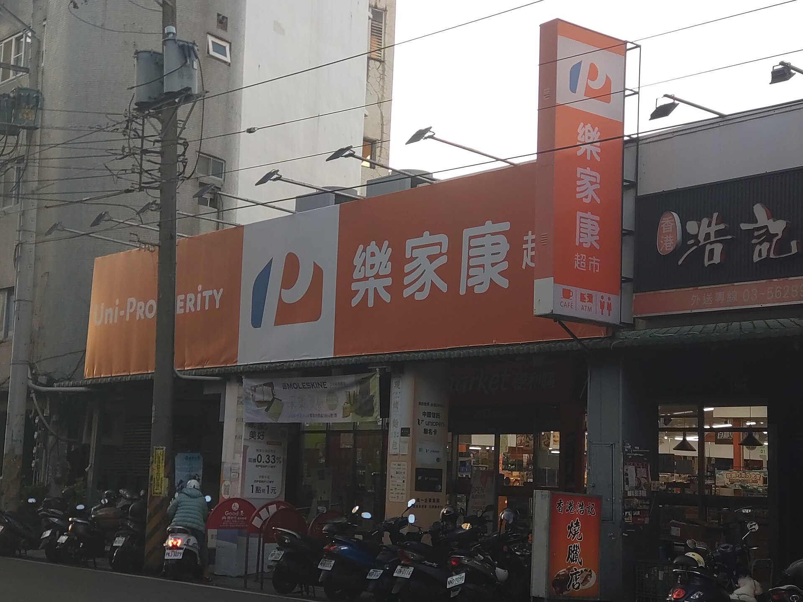

即食餐點 Ready-to-eat meals
御飯糰、便當、關東煮、茶葉蛋與咖啡；多數微波食品可請店員加熱。
Find rice balls, lunch boxes, oden, tea eggs and coffee. Staff can heat up most microwave meals.
巷口的萬能好鄰居
7-ELEVEN、全家 FamilyMart、萊爾富 Hi-Life、OKmart 隨處可見；許多門市 24 小時營業，而且功能遠超過「買東西」。
Convenience stores are everywhere, and many open 24/7. They are mini service hubs—not just places to grab a drink.




御飯糰、便當、關東煮、茶葉蛋與咖啡；多數微波食品可請店員加熱。
Find rice balls, lunch boxes, oden, tea eggs and coffee. Staff can heat up most microwave meals.
網購可選超商取貨，也能用店到店寄包裹。取貨常需出示證件或提供手機末三碼。
Pick up online orders or send store-to-store parcels. You may need ID or the last three digits of your phone number.
可繳水電、電信帳單；ibon、FamiPort 等機台也能列印、掃描、購票。
Pay bills, and use in-store kiosks for printing, scanning and ticket purchases.
常見現金、信用卡、悠遊卡或行動支付；各店支援不同，店內通常也有 ATM。
Cash, cards, EasyCard and mobile payments are common, though options vary. ATMs are often available.
冰箱補貨日
要買蔬果、肉品、調味料或大包裝日用品，超市通常比便利商店更划算。
For fresh produce, meat, seasonings and larger household packs, supermarkets usually offer better value.


第一次結帳也不緊張
點一下店員的問題，就能看到最簡單的回答方式。
Tap a cashier’s question to reveal a simple answer.
有：「有，手機條碼。」並出示條碼。
沒有：「不用，請給我紙本發票。」
Yes: “Mobile barcode,” then show it. No: “A paper receipt, please.” A 載具 stores e-invoices digitally.
有：報手機號碼或出示 App。
沒有：「沒有，謝謝。」
Give your phone number or show the app; otherwise say “No, thank you.”
「需要，一個就好。」或「不用，我有環保袋。」袋子通常要付費。
Say “Yes, one please,” or “No, I have my own bag.” Bags usually cost extra.
想存電子發票可回答「好，存裡面」；要紙本則說「請印出來」。
Say “Yes, save it” for an e-invoice, or ask them to print it.
在地人的省心小訣竅
多數商店的塑膠袋需付費。
Bring a reusable bag; plastic bags usually cost extra.
發票還能參加每兩個月一次的統一發票對獎。
Receipts are also tickets in Taiwan’s bimonthly invoice lottery.
不是每家店都接受海外信用卡，準備少量現金更安心。
Some shops reject foreign cards, so keep a little cash handy.
退稅資格受商店、身分與居留天數影響。
Tax refunds depend on the store and your immigration status.